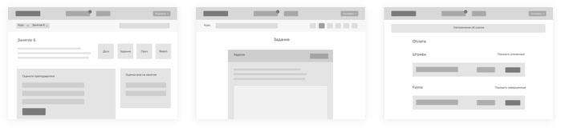

Империя репетиторов
Империя Репетиторов — это онлайн платформа курсов подготовки к ЕГЭ.
Отрисовка экранов
Моей задачей было отрисовать экраны внутреннего интерфейса на основе готовых вайрфреймов и с учетом флоучарта.


Верстка экранов
Также для этого проекта я делала верстку.